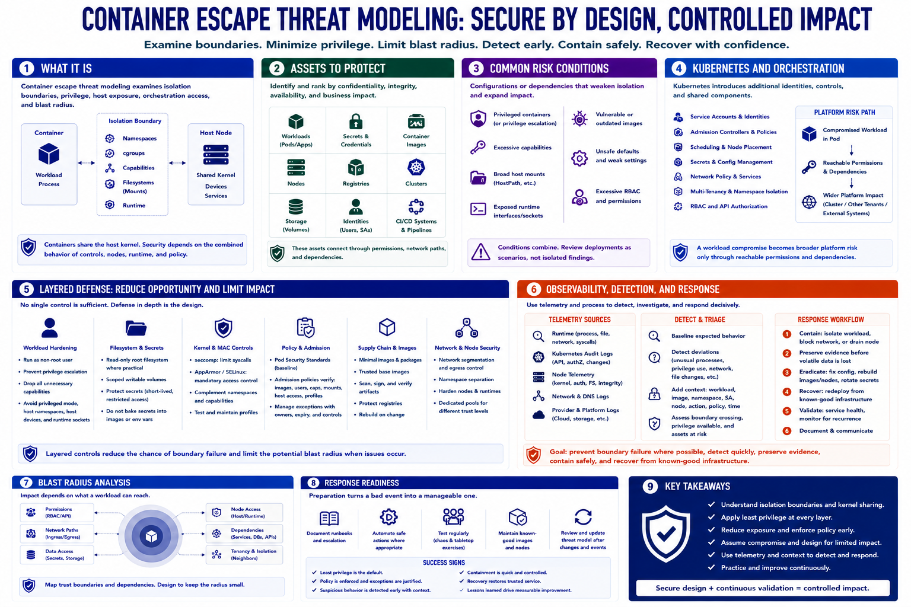

Course Summary and Key Takeaways
Connecting to LMS... Progress: in progress

Narration
Container escape threat modeling examines isolation boundaries, privilege, host exposure, orchestration access, and blast radius. Containers share the host kernel, so security depends on the combined behavior of namespaces, cgroups, capabilities, filesystems, runtimes, nodes, and policy.
Important assets include workloads, secrets, images, nodes, registries, clusters, storage, identities, and CI/CD systems. Common risk conditions include privileged containers, excessive capabilities, broad host mounts, exposed runtime interfaces, vulnerable images, unsafe defaults, and excessive RBAC.
Kubernetes adds service accounts, admission, scheduling, secrets, network policy, and multi-tenant concerns. A workload compromise becomes broader platform risk only through reachable permissions and dependencies, which is why explicit trust boundaries and blast-radius analysis matter.
Layered defense combines non-root execution, dropped capabilities, read-only filesystems, seccomp, AppArmor or SELinux, pod-security policy, admission controls, hardened images, protected secrets, segmentation, node hardening, and carefully managed exceptions.
Runtime, Kubernetes, and node telemetry support detection and response. The goal is not fear of containers or procedural escape research. It is secure design and controlled impact: prevent boundary failure where possible, detect suspicious behavior quickly, preserve evidence, contain safely, and recover from known-good infrastructure.